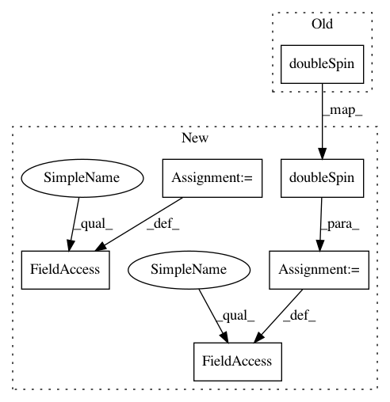

1c036207cc20d90e51866a62563672375593de2c,Orange/widgets/regression/owsvmregression.py,OWSVMRegression,_add_type_box,#OWSVMRegression#,37
Before Change
2, 0, Qt.AlignLeft)
form.addWidget(QLabel("Cost (C):"),
2, 1, Qt.AlignRight)
form.addWidget(gui.doubleSpin(box, self, "nu_C", 0.1, 512.0, 0.1,
decimals=2, addToLayout=False),
2, 2)
form.addWidget(QLabel("Complexity bound (ν):"),
3, 1, Qt.AlignRight)
After Change
addToLayout=False)
self.epsilon_C_spin = gui.doubleSpin(box, self, "epsilon_C", 0.1, 512.0,
0.1, decimals=2, addToLayout=False)
self.epsilon_spin = gui.doubleSpin(box, self, "epsilon", 0.1, 512.0,
0.1, decimals=2, addToLayout=False)
form.addWidget(self.epsilon_radio, 0, 0, Qt.AlignLeft)
form.addWidget(QtGui.QLabel("Cost (C):"), 0, 1, Qt.AlignRight)
form.addWidget(self.epsilon_C_spin, 0, 2)
form.addWidget(QLabel("Loss epsilon (ε):"), 1, 1, Qt.AlignRight)
form.addWidget(self.epsilon_spin, 1, 2)
self.nu_radio = gui.appendRadioButton(box, "ν-SVR", addToLayout=False)
self.nu_C_spin = gui.doubleSpin(box, self, "nu_C", 0.1, 512.0, 0.1,
decimals=2, addToLayout=False)
self.nu_spin = gui.doubleSpin(box, self, "nu", 0.05, 1.0, 0.05,
decimals=2, addToLayout=False)
form.addWidget(self.nu_radio, 2, 0, Qt.AlignLeft)
form.addWidget(QLabel("Cost (C):"), 2, 1, Qt.AlignRight)
In pattern: SUPERPATTERN
Frequency: 3
Non-data size: 6
Instances
Project Name: biolab/orange3
Commit Name: 1c036207cc20d90e51866a62563672375593de2c
Time: 2016-08-30
Author: tankovesna@hotmail.com
File Name: Orange/widgets/regression/owsvmregression.py
Class Name: OWSVMRegression
Method Name: _add_type_box
Project Name: biolab/orange3
Commit Name: 1c036207cc20d90e51866a62563672375593de2c
Time: 2016-08-30
Author: tankovesna@hotmail.com
File Name: Orange/widgets/regression/owsvmregression.py
Class Name: OWSVMRegression
Method Name: _add_type_box
Project Name: biolab/orange3
Commit Name: 1c036207cc20d90e51866a62563672375593de2c
Time: 2016-08-30
Author: tankovesna@hotmail.com
File Name: Orange/widgets/classify/owsvmclassification.py
Class Name: OWSVMClassification
Method Name: _add_type_box
Project Name: biolab/orange3
Commit Name: 5ca3688e3a2773f0d9d91aa32c03abd2821c29d8
Time: 2016-07-20
Author: tankovesna@hotmail.com
File Name: Orange/widgets/classify/owadaboost.py
Class Name: OWAdaBoostClassification
Method Name: add_main_layout